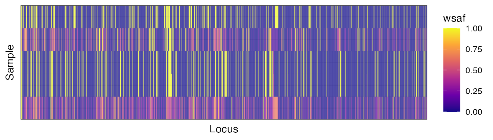

genetic_distances.RmdThis tutorial covers:
Before doing anything, we will need to load some additional packages:
We will use a dataset of bi-allelic data already in the
mipanalyzer_biallelic format and filtered down to the
samples of interest (see earlier tutorial). We can load this example
data as follows:
# read mipanalyzer_biallelic from path
dat_path <- here("inst/extdata", "dat_biallelic.rds")
dat_biallelic <- readRDS(dat_path)We want to estimate how related each sample is to each other as a proportion between 0 and 1. This is not the same thing as simply comparing genotypes because a samples may be have identical information at a given locus (identity in state, IBS) without sharing a recent common ancestor (identity by descent, IBD). In order to work out IBD, we have to somehow account for the chance probability of being the same.
One approach that was used in this paper is to use the population-level allele frequencies (PLAFs) as our model for how likely a sample is to carry the REF vs. ALT allele. Let \(p\) be the PLAF of the REF allele at a given locus, and \(q=1-p\) be the PLAF of the ALT allele. We can write down the probability of two samples being identical for the REF allele (\(\text{Homo REF}\)), identical for the ALT allele (\(\text{Homo ALT}\)), or non-identical (\(\text{Het}\)) as a function of these allele frequencies and the inbreeding coefficient, \(f\):
\(Pr(\text{Homo REF}) = fp + (1-f)p^2\)
\(Pr(\text{Homo ALT}) = fq + (1-f)q^2\)
\(Pr(\text{Het}) = (1 - f)2pq\)
Taking the product of these probabilities over all loci, we arrive at a likelihood in terms of \(f\). We can then find the maximum likelihood estimate (MLE) of \(f\). Note that this approach assumes that every locus is an independent draw from the PLAFs and that \(f\) is independent across loci, both of which are untrue. A more thorough approach is presented in tools like hmmIBD or isoRelate. Nevertheless, this is a quick and easy way of getting an impression of relatedness between samples.
The function inbreeding_mle() performs all of the steps
above on all pairwise samples:
mle_inbreeding <- inbreeding_mle(dat_biallelic, report_progress = FALSE)
mle_inbreeding$mle[1:5,1:5]
#> [,1] [,2] [,3] [,4] [,5]
#> [1,] NA 0 0 0 0
#> [2,] NA NA 0 0 0
#> [3,] NA NA NA 0 0
#> [4,] NA NA NA NA 0
#> [5,] NA NA NA NA NAWe can see that for the first 5 samples our best estimate is that these samples are completely unrelated. We can convert this into a genetic distance by taking one minus the relatedness, which results less related samples having a greater distance between them. We can then visualise the matrix of distances between all samples:
# convert to a distance
dist_inbreeding <- 1 - mle_inbreeding$mle
# plot all pairwise distances between samples
plot_distance(dist_inbreeding, col_pal = "magma")
There are a few pairs of samples that jump out as having low distances (high relatedness). We can identify these samples:
# find the highly related pairs
which(dist_inbreeding <= 0.1, arr.ind = TRUE)
#> row col
#> [1,] 53 54
#> [2,] 49 58
#> [3,] 69 71We can see that samples 53 and 54 appear to be highly related. It is interesting to look at the within-sample allele frequencies (WSAFs) of all samples from 51 to 55:

Most samples have clearly different patterns of WSAFs, but we can see that samples 53 and 54 (the 3rd and 4th rows of this plot) have almost identical WSAFs everywhere. This is a sanity check of what the MLE inbreeding value is telling us - that these samples are more similar than we would expect by chance. It is very likely that these are identical (clonal) strains in two individuals, which may imply a short transmission chain between them.
Several different methods for calculating genetic distances are
implemented inside MIPanalyzer. Let’s calculate a few of
them and compare results:
dist_genomic <- get_genomic_distance(dat_biallelic, report_progress = FALSE)
dist_IBS <- get_IBS_distance(dat_biallelic, report_progress = FALSE)
dist_mixture <- 1 - get_IB_mixture(dat_biallelic, report_progress = FALSE)
upper <- upper.tri(dist_genomic)
data.frame(MLE_inbreeding = dist_inbreeding[upper],
genomic = dist_genomic[upper],
IBS = dist_IBS[upper],
mixture = dist_mixture[upper]) |>
plot()We can see that the “genomic” distance and the “MLE inbreeding” distance agree quite closely. Also the “IBS” distance and the “mixture” distance agree closely. However, the two sets of distances do not agree with each other for certain key samples. These are the three samples that we identified above as being closely related. This is because the “genomic” and “MLE inbreeding” metrics are specifically designed to identify outliers in terms of genetic similarities, whereas the other two metrics are more crude estimates of genetic similarity.